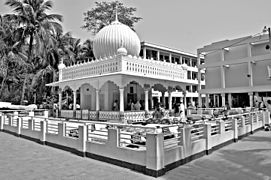
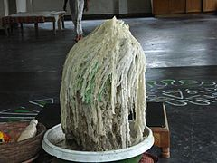
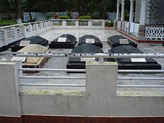
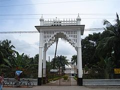
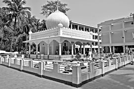
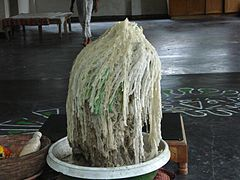
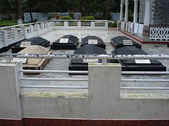
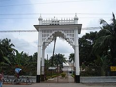

Biography
Lalon answers, "What does religion look like?"
I've never laid eyes upon it.
Some use Malas (Hindu rosaries),
others Tasbis (Muslim rosaries), and so people say
they belong to different religion.
But do you bear the sign of your religion
— Lalon[11]
[Edited to give a better translation]

There are few reliable sources for the details of Lalon's early life as he was reticent in revealing his past.[2] It is not known whether he was born in a Hindu or a Muslim family.[12] Lalon had no formal education.[13]
One account relates that Lalon, during a pilgrimage to the temple of Jagannath with others of his native village, he contracted smallpox and was abandoned by his companions on the banks of the Kaliganga River,[14] from where Malam Shah and his wife Matijan, members of the weaver community in a Muslim-populated village, Cheuriya, took him to their home to convalesce. They gave Lalon land to live where he founded a musical group and remained to compose and perform his songs, inspired by Shiraj Sain, a musician of that village. Lalon lost the sight of his one eye in smallpox.[12] Researchers note that Lalon was a close friend of Kangal Harinath, one of the contemporary social reformers and was a disciple of Lalon.[15]
Lalon lived within the zamindari of the Tagores in Kushtia and had visited the Tagore family.[16] It is said that zamindar Jyotirindranath Tagore sketched the only portrait of Lalon in 1889 in his houseboat on the river Padma.[17][18] Lalon died at Chheuriya on 17 October 1890 at the age of 116. The news of his death was first published in the newspaper Gram Barta Prokashika, run by Kangal Harinath.[19] Lalon was buried at the middle of his dwelling place known as his Akhra.[20]
.JPG)
.JPG)
 






